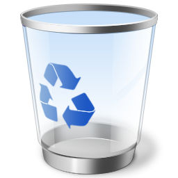

Madrid
21°C
Partly Cloudy
CPU & RAM METER
CPU 28%
RAM 45%
Slide Show

Recycle Bin
Media Center
Internet Explorer
Windows Photo Gallery
File
Fix
Info
Print
E-mail
Make a Movie
Computer
Computer
>
Hard Disk Drives (1)
Local Disk (C:)
Devices with Removable Storage (1)
CD-RW Drive (D:)
CDFS Optical Disc
Windows Media Center
media center
TV + Movies
Music
Pictures + Videos
Tasks
Sports
Use arrow keys or click to navigate categories
Recycle Bin
Empty the Recycle Bin
Restore all items
This folder is empty.
MSN.com - Windows Internet Explorer
msn.
Windows Vista News
Experience Windows Aero graphics, Windows Sidebar Gadgets, instant desktop search, and enhanced security with Windows Defender.
Entertainment
Discover music, videos, and games with Windows Media Player 11 and Windows Media Center.